栈是限定仅在表尾进行插入和删除操作的线性表.
队列是只允许在一段进行插入操作、而在另一端进行删除操作的线性表。
栈的定义
栈(stack)是限定仅在表尾进行插入和删除操作的线性表.
语序插入和删除的一端称为栈顶(top),另一端称为栈底(bottom),不含任何数据元素的栈称为空栈.栈又称为后进先出(Last In First Out)的线性表,简称为LIFO结构.
理解栈的定义需要注意,栈仍然是线性表,具有线性关系和前驱后继关系,只不过比普通线性表稍微特殊.定义中说在线性表的表尾进行插入和删除操作,这里的表尾是只栈顶而不是栈底.
栈的插入操作,叫做进栈,又称压栈、入栈.如图4-2-2所示.
栈的删除操作,叫做出栈,又称弹栈.如图4-2-3所示.
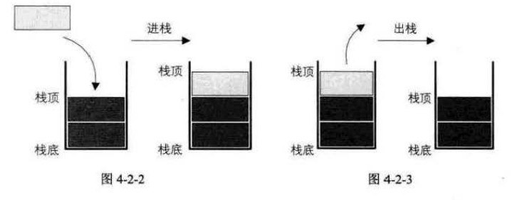
进栈出栈变化形式
最先进栈的元素并不一定只能最后出栈,因为栈对线性表的插入和删除的位置进行了限制,并没有对元素进出的时间进行限制.在不是所有元素都进展的情况下,实现进栈的元素也可以出栈,只要保证是栈顶元素便可
例,现有三个整型数字元素1、2、3依次进栈,会有哪些出栈次序?
- 第一种：1、2、3进，3、2、1出。出栈次序为321
- 第二种：1进，1出，2进，2出，3进，3出。出栈次序为123
- 第三种：1进，2进，2出，1出，3进，3出。出栈次序为213
- 第四种：1进，1出，2进，3进，3出，2出。出栈次序为132
- 第五种：1进，2进，2出，3进，3出，1出。出栈次序为231
但没有312这种出栈次序。
栈的抽象数据类型
栈也是线性表，理论上线性表的操作特性它都具备，但当然也有不同。栈的插入和删除操作，我们改名为push和pop，直译就是压和弹的意思，好比是给弹夹压入和弹出子弹一样。平时叫还是叫进栈和出栈。1
2
3
4
5
6
7
8
9
10
11
12
13ADT栈(stack)
Data
同线性表.元素具有相同的类型,相邻元素具有前驱和后继关系.
Operation
InitStack(*S):初始化操作,建立一个空栈S.
DestroyStack(*S):若栈存在,则销毁.
ClearStack(*S):将栈清空.
StackEmpty(S):若栈为空,返回true,否则返回false.
GetTop(S,*e):若栈存在且非空,用e返回S的栈顶元素.
Push(*S,e):若栈S存在,插入新元素e到栈S中并成为栈顶元素.
Pop(*S,*e):删除栈S中栈顶元素,并用e返回其值.
StackLength(S):返回栈S的元素个数.
endADT
栈的顺序存储结构及实现
栈的顺序存储结构
栈的结构定义:1
2
3
4
5
6typedef int SElemType; //SElemType类型根据实际情况而定,这里假设为int
typedef struct
{
SElemType data[MAXSIZE];
int top; //用于栈顶指针
}
若现有一个栈,StackSize是5,则栈普通状况、空栈和栈满的情况示意图如图4-4-2所示。
！图4-4-2
栈的顺序存储结构—进栈操作
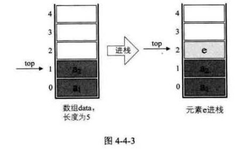
进栈代码操作push,其代码如下:1
2
3
4
5
6
7
8
9
10Status Push(SqStack *S,SElemType e)
{
if (S->top == MAXSIZE - 1)
{
return ERROP;
}
S->top++;
S->data[S->top]=e;
return OK;
}
栈的顺序存储结构—出栈操作
出栈操作pop,代码如下:1
2
3
4
5
6
7
8
9/*若栈不空,则删除S的栈顶元素,用e返回其值,并返回OK;否则返回ERROR*/
Status Pop(SqStack *S,SElemType *e)
{
if(S->top==-1)
return ERROR;
*e=S->data[S->top]; //将要删除的栈顶元素赋值给e
S->top--; //栈顶指针减一
return OK;
}
两栈共享空间
为了节省空间,可以使用一个数组来存储两个栈,栈底分别为数组的始端即下标为0处,和数组的末端即下标为n-1处.存储时,两栈栈顶不断向数组中间靠拢,如图4-5-1,当top1 + 1 == top2时栈满
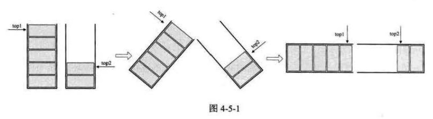
两栈共享空间的结构的代码如下:1
2
3
4
5
6
7/*两栈共享空间结构*/
typedef struct
{
SElemType data[MAXSIZE];
int top1; //栈1栈顶指针
int top2; //栈2栈顶指针
}AqDoubleStack;
对于两栈共享空间的push方法,除了要插入元素值参数,害需要有一个判断是栈1还是栈2的栈号参数stackNumber.插入元素的代码如下:1
2
3
4
5
6
7
8
9
10
11/*插入元素e为新的栈顶元素*/
Status Push(SqDoubleStack *S,SElemType e,int stackNumber)
{
if (S->top1+1==S->top2) //栈满
return ERROR;
if (stackNumber==1) //进栈1
S->data[++S->top1]=e; //栈顶移位腾空间
else if (stackNumber==2) //进栈2
S->data[--S->top2]=e //栈顶移位腾空间
return OK;
}
对于两栈共享空间的pop方法,参数就只是判断是栈1还是栈2的参数stackNumber1
2
3
4
5
6
7
8
9
10
11
12
13
14
15
16
17/*若栈不为空,则删除S的栈顶元素,用e返回其值,并返回OK;否则返回ERROR*/
Status Pop(SqDoubleStack *S,SElemType *e,int stackNumber)
{
if (stackNumber==1)
{
if (S->top1==-1)
return ERROR; //说明栈1已经是空栈,溢出
*e=S->data[S->top1--] //将栈1的栈顶元素出栈
}
else if (stackNumber==2)
{
if (S->top2==MAXSIZE)
return ERROR; //...
*e=S->data[S->top2++]; //...
}
return OK;
}
一般只有在两个栈的空间需求相反时才会使用两栈共享空间的方式,而且必须是相同的数据类型
栈的链式存储结构及实现
栈的链式存储结构
栈的链式存储结构,简称为链栈.
通常链栈把栈顶放在头部,这样就不需要头结点了.如图4-6-1
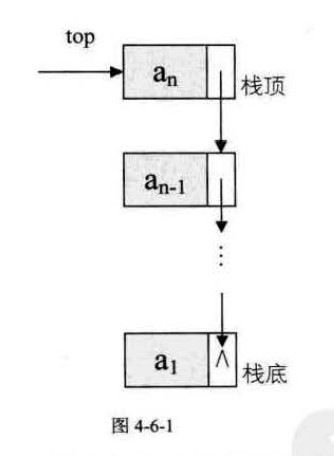
对于链栈,除非是内存完全被占用,否则不会出现栈满的情况
链栈的空栈是在top==NULL时
链栈的结构代码:1
2
3
4
5
6
7
8
9
10
11typedef struct StackNode
{
SElemType data;
struct StackNode *next;
}StackNode,*LinkStackPtr;
typedef struct LinkStack
{
LinkStackPtr top;
int count;
}LinkStack;
链栈的操作绝大部分都和单链表相似,值在插入和删除上特殊一些
栈的链式存储结构—进栈操作
对于链栈的进栈push操作,假设元素值为e的新结点是s,top为栈顶指针,示意图如图4-6-2所示
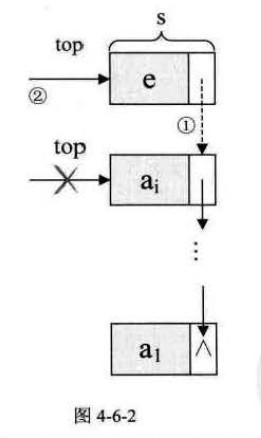1
2
3
4
5
6
7
8
9
10/*插入元素e为新的栈顶元素*/
Status Push(LinkStack *S,SElemType e)
{
LinkStackPtr s=(LinkStackPtr)malloc(sizeof(StackNode))
s->data=e;
s->next=S->top; //把当前的栈顶元素赋值给新结点的直接后继
S->top=s; //将新的结点s赋值给栈顶指针
S->count++;
return OK;
}
栈的链式存储结构—出栈操作
假设变量p用来存储要删除的栈顶结点,只需将栈顶指针下移一位,最后释放p即可,如图4-6-3所示.
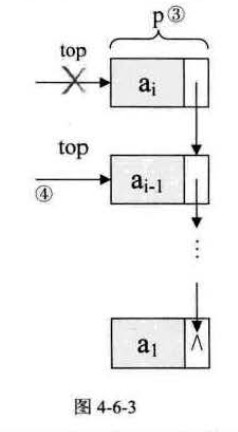1
2
3
4
5
6
7
8
9
10
11
12
13/*若栈不空,则删除S的栈顶元素,用e返回其值,并返回OK;否则返回ERROR*/
Status Pop(LinkStack *S,SElemType *e)
{
LinkStackPtr p;
if (StackEmpty(*S))
return ERROR;
*e=S->top->data;
p=S->top; //将栈顶结点赋值给p
S->top=S->top->next; //使得栈顶指针下移一位,指向后一结点
free(p); //释放结点p
S->count--;
return OK;
}
链栈的进栈push和出栈pop操作都比较简单,时间复杂度都为O(1).
顺序栈需事先确定固定长度的内存,但取存时定位很方便
链栈要求每个元素都有指针域,会增加一些内存开销,但对于栈的长度无限制.
栈的作用
栈的引入简化了程序设计的问题,划分了不同关注层次,使得思考范围缩小,更加聚焦于我们要解决的问题核心.
现在很多高级语言,如Java、C#等都有对栈结构的封装，可以直接使用Stack的push和pop方法，非常方便。
栈的应用—递归
栈有一个很重要的应用:在程序设计语言中实现了递归,但什么是递归?
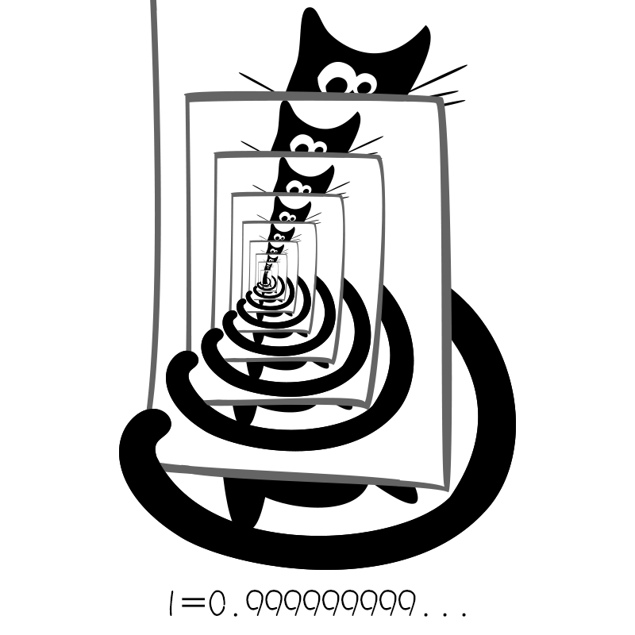
斐波那契数列实现
斐波那契数列想必是程序设计课程都难以绕过的一个环节
如果兔子在出生两个月后就有繁殖能力,一堆兔子每个月能生出一对(一公一母)小兔子,假设所有兔子都不死,那么一年后可以繁殖多少对兔子?
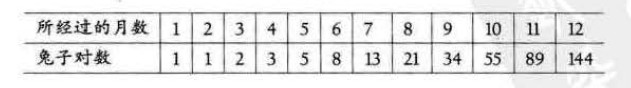
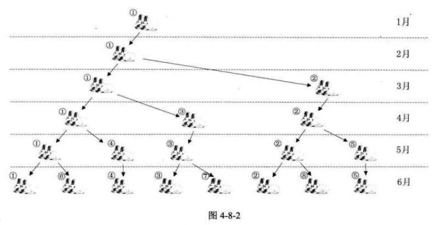
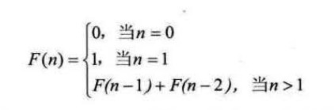
如果使用常规的迭代方法,想要打印前40为斐波那契数列,代码如下:1
2
3
4
5
6
7
8
9
10
11
12
13
14
15int main()
{
int i;
int a[40];
a[0]=0;
a[1]=1;
printf("%d ",a[0]);
printf("%d ",a[1]);
for(i=2;i<40;i++)
{
a[i]=a[i-1]+a[i-2];
printf("%d ",a[i]);
}
return 0;
}
递归代码如下:1
2
3
4
5
6
7
8
9
10
11
12
13
14
15/*斐波那契的递归函数*/
int Fbi(int i)
{
if(i<2)
return i==0?0:1; //小于2的数只有0和1,问号表达式的意思是
//如果i是0返回0,如果是1返回1
return Fbi(i-1)+Fbi(i-2); //这里的Fbi就是函数自己
}
int main()
{
int i;
for (int i=0;i<40;i++)
printf("%d ",Fbi(i));
return 0;
}
当i=5时,Fbi()函数的执行过程如下:
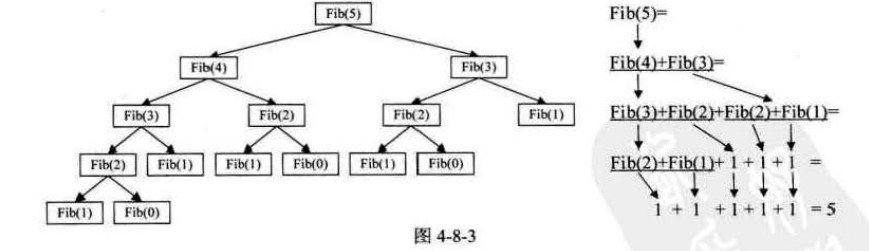
递归定义
把一个直接调用自己活通过一系列的调用语句简介地调用自己的函数称作递归函数.
每个递归函数定义必须至少有一个条件,使得不满足条件时跳出递归,否则将会陷入死循环
相对于迭代,递归能使程序更加清晰简洁,但大量的递归调用会建立函数的副本,消耗大量的时间和内存.
但是,递归和栈又有什么关系呢?其实,递归就是由栈来实现的.递归过程退回的顺序是他前行顺序的逆序,在前行阶段,每一层递归,函数的局部变量,参数值以及返回地址都被压入栈中,在退回阶段,位于栈顶的局部变量,参数值和返回地址被弹出,用于返回调用层次中执行代码的其余部分,也就是恢复了调用的状态.
栈的应用—四则运算表达式求值
后缀(逆波兰)表示法定义
一般的四则运算表达式经常会带有括号,是计算非常复杂.而逆波兰确实一种不需要括号的后缀表达法
比如:9 + (3 - 1) * 3 + 10 / 2,利用逆波兰可以表示为: 9 3 1 - 3 * + 10 2 / +,因为所有的运算符都是在运算数字的后面,所以叫做后缀表达式
后缀表达式计算结果
后缀表达式: 9 3 1 - 3 * + 10 2 / +
规则:从左到右遍历表达式的每个数字和符号,遇到是数字就进栈,遇到是符号就将处于栈顶两个数字出栈进行运算,运算结果进栈,一直到得到最终结果
- 初始化一个空栈.此栈用来对要运算的数字进出使用.如图4-9-1的左图所示.
- 后缀表达式中前三个都是数字,所以9、3、1进栈，如图4-9-1的右图所示。
！图4-9-1 - 接下来是”-“,所以栈中的1出栈作为减数,3出栈作为被减数,并运算3-1得到2,再将2进栈,如图4-9-2的左图所示.
- 接着是数字3进栈,如图4-9-2的右图所示.
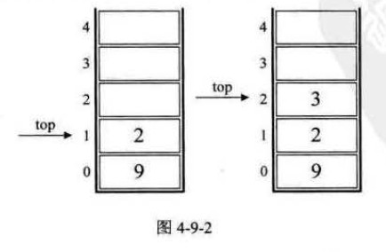 - 后面是”*”,所以3和2出栈,相乘,得6,并将6进栈,如图4-9-3的左图所示.
- 下面是”+”,所以栈中6和9出栈,9与6相加,得到15,将15进栈,如图4-9-3的右图
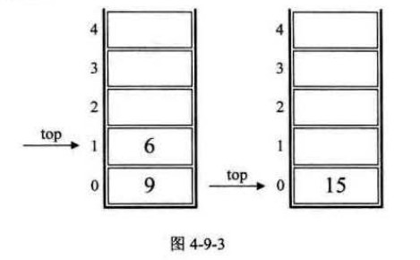 - 接着是10和2进栈,如图4-9-4左图
- 接下来是符号”/“,因此栈顶的2和10出栈,10和2相除,得5,5进栈,如图4-9-4右图
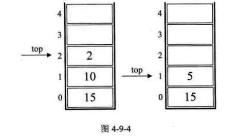 - 最后一个符号是”+”,所以15和5出栈并相加,得20,20进栈如图4-9-5的左图.
- 结果是20出栈,栈变为空,如图4-9-5右图
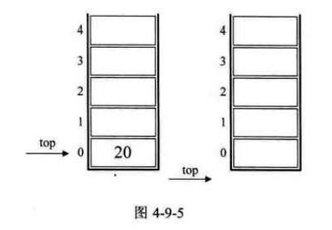
中缀表达式转后缀表达式
标准四则运算表达式,如”9 + (3 - 1) * 3 + 10 / 2”叫做中缀表达式.
中缀表达式”9 + (3 - 1) * 3 + 10 / 2”转化为后缀表达式”9 3 1 - 3 * + 10 2 / +“
规则: 从左往右遍历中缀表达式的每个数字和符号,若是数字就输出,即成为后缀表达式的一部分;若是符号,则判断其余栈顶符号的优先级,是右括号或优先级低于栈顶符号,则栈顶元素依次出栈并输出,并将当前符号进栈,一直到最终输出后缀表达式为止.
- 初始化一空栈,用来对符号进出栈使用.如图4-9-6的左图
- 第一个字符是数字9,输出9,后面是符号”+”进栈.如图图4-9-6右图
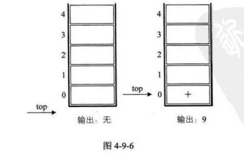 - 第三个字符是”(“,依然是符号,因其实左括号,还未配对,故进栈.如图4-9-7左图
- 第四个字符是数字3,输出,当前表达式为9 3,接着是”-“,进栈.如图4-9-7右图
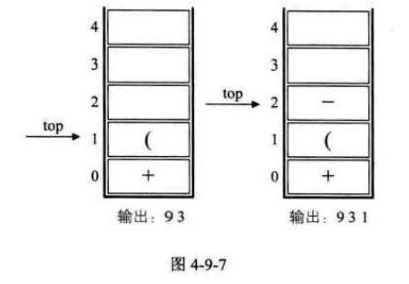 - 接下来是数字1,输出,当前表达式为9 3 1,后面是符号”)”,此时,我们需要去匹配此前的”(“,所以栈顶一次出栈,并输出,知道”(“出栈位置.此时左括号上方只有”-“,因此输出”-“.当前表达式为9 3 1 -.如图4-9-8左图.
- 接着是数字3,输出,总的表达式为9 3 1 - 3.接着是符号”*“,因为此时的栈顶符号为”+”号,优先级低于”*“,因此不输出,”*“进栈.如图4-9-8右图
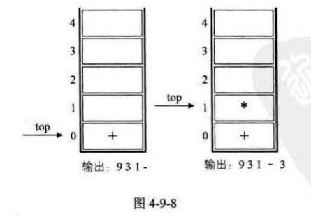 - 之后是符号”+”,此时当前栈顶元素”*“比这个”+”的优先级高,因此栈中元素出栈并输出(没有比”+”号更低的优先级,所以全部出栈),当前输出表达式为9 3 1 - 3 +.然后将当前这个符号”+”进栈.也就是说,前6张图的栈底的”+”是指中缀表达式中开头的9后面那个”+”,而图4-9-9左图中的栈底(也是栈顶)的”+”是指”9+(3-1)3+”中的最后一个”+”.
- 紧接着数字10,输出,当前表达式为9 3 1 - 3 * + 10.后是符号”/“,所以”/“进栈.如图4-9-9右图.
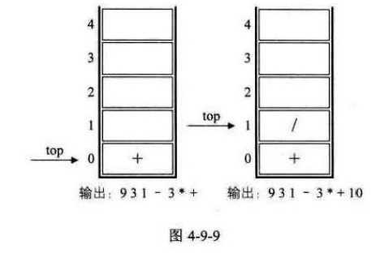 - 最后一个数字2,输出,当前表达式为9 3 1 - 3 * + 10 2.如图4-9-10左图
- 因为已经到最后了,所以将栈中符号全部出栈并输出.最终输出的后缀表达式结果为9 3 1 - 3 * + 10 2 / +.如图4-9-10右图
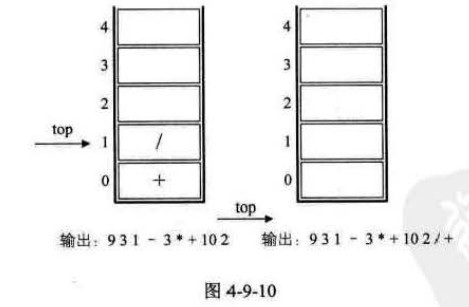
可总结出,要想要计算机具有处理我们通常的标准表达式的能力,需要做到两步: - 将中缀表达式转化为后缀表达式(栈用来进出运算的符号).
- 将后缀表达式进行运算得出结果(栈用来进出运算的数字)
队列的定义
在操作系统和客服系统的排队功能中都应用了一种数据结构实现先进先出的功能,这就是队列
**队列(queue)是只允许在一端进行插入操作,而在另一端进行删除操作的线性表.
队列是一种先进先出(First In First Out)的线性表,简称FIFO.允许插入的一端称为队尾,允许删除的一端称为队头.假设队列q=(a_1,a_2,…,a_n),那么a_1就是队头元素,a_n是队尾元素,删除时总是从a_1开始,插入时将取代a_n称为新队尾.如图4-10-1
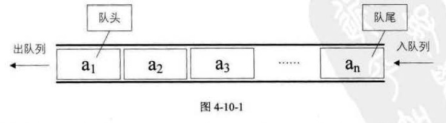
列队定义了两个指针头指针front和尾指针rear.
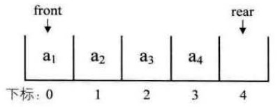
队列的抽象数据类型
同样是线性表,队列也有类似于线性表的各种操作.1
2
3
4
5
6
7
8
9
10
11
12
13ADT队列(Queue)
Data
同线性表.元素具有相同的类型,相邻元素具有前驱和后继关系.
Operation
InitQueue(*Q):初始化操作,建立一个空列队Q.
DestroyQueue(*Q):若队列存在,则销毁
ClearQueue(*Q):将队列Q清空.
QueueEmpty(Q):若队列Q为空,返回true,否则返回false.
GetHead(Q,*e):若队列Q存在且非空,用e返回队列Q的队头元素
EnQueue(*Q,e):若队列Q存在,插入新元素e到队列Q中称为队尾元素.
DeQueue(*Q,*e):删除队列Q中队头元素,并用e返回其值.
QueueLength(Q):返回队列Q的元素个数.
endADT
循环队列
循环队列定义
如果采用单向线性表为列队,会造成队头有空位,而队尾无位置的”假溢出”.如果是头尾相接的循环便不会出现”假溢出的问题”.
我们把队列的这种头尾相接的顺序存储结构称为循环列队
循环队列下,尾指针rear在到达队尾后可以从头开始,图4-12-6
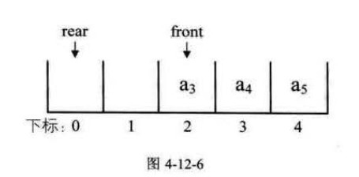
接着插入a_6,将其置于下标为0处,rear指针指向下标为1处,如图4-12-7左图.此时,若在入队a_7,则rear指针就与front指针重合,同时指向下标为2的位置,如图4-12-7右图.
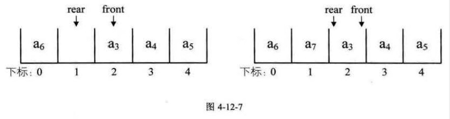
此时问题又出现了,空列队时,front==rear,而当队列满时,也是front==rear,那么如何判断此时队列究竟是空还是满呢?
- 办法一是设置标志变量flag,当front==rear && flag==0时为队列空,当front==rear且flag==1时为队列满.
- 办法二是当列队空时,条件就是front==rear,当队列满时,修改其条件,保留一个元素空间.也就是说,队列满时,数组中还有一个空闲单元.例如图4-12-8所示,我们就认为此队列已经满了,也就是说,不允许4-12-7右图情况出现
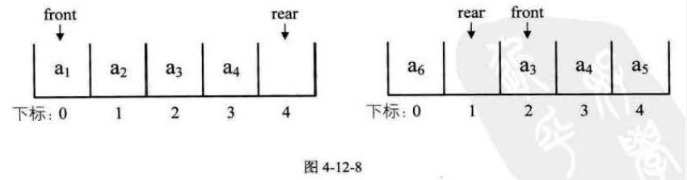
由于rear可能比front大,也可能比front小,所以若队列的最大尺寸为QueueSize,那么队列满的条件 (rear+1)%QueueSize==front (取模”%”的目的是为了整合rear与front大小为一个问题.)
另外,当rear>font时,队列长度为rear-front;当rear1
2
3
4
5
6
7
8typedef int QElemType; //QElemType类型根据实际情况而定,这里假设为int
/*循环列队的顺序存储结构*/
typedef struct
{
QElemType data[MAXSIZE];
int front; //头指针
int rear; //尾指针,若队列不空,指向队列尾元素的下一个位置
}SqQueue;
循环队列的初始化代码如下:1
2
3
4
5
6
7/*初始化一个空队列Q*/
Status InitQueue(SqQueue *Q)
{
Q->frint=0;
Q->rear=0;
return OK;
}
循环队列求队列长度代码如下:1
2
3
4
5/*返回Q的元素个数,也就是队列的当前长度*/
int QueueLength(SqQueue Q)
{
return (Q.rear-Q.front+MAXSIZE)%MAXSIZE;
}
循环列队的如列队操作代码如下:1
2
3
4
5
6
7
8
9/*若列队未满,则插入元素e为Q新的队尾元素*/
Status EnQueue(SqQueue *Q,QElemType e)
{
if ((Q->rear+1)%MAXSIZE==Q->front) //判断队列是否已满
return ERROR;
Q->data[Q-rear]=e; //将元素e赋值给队尾
Q->rear=(Q->rear+1)%MAXSIZE; //rear指针向后移一位置,若到最后则转到数组头部
return OK;
}
循环列队的出队列操作代码如下:1
2
3
4
5
6
7
8
9/*若队列不空,则删除Q中队头元素,用e返回其值*/
Status DeQueue(SqQueue *Q,QElemType *e)
{
if (Q->front == Q->rear) //队列空的判断
return ERROR;
*e=Q->data[Q->front]; //将队头元素赋值给e
Q->front=(Q->front+1)%MAXSIZE; //front指针向后移一位置,若为末尾则转至头部
return OK;
}
队列的链式存储结构即实现
队列的链式存储结构,其实就是线性表的单链表,只不过让智能尾进头出罢了,我们称之为链队列.
为了操作方便,我们将队头指针指向链队列的头结点,而尾指针指向终端结点,如图4-13-1所示.
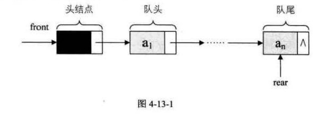
空列队时,front和rear都指向头结点,如图4-13-2所示
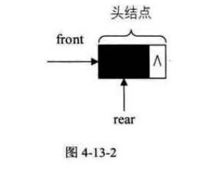
链队列的结构为:1
2
3
4
5
6
7
8
9
10
11typedef int QElemType; //QElemType类型根据实际情况而定,这里假设为int
typedef struct QNode //结点结构
{
QElemType data;
struct QNode *next;
}QNode,*QueuePtr;
typedef struct //队列的链表结构
{
QueuePtr front,rear; //队头;队尾指针
}LinkQueue;
队列的链式存储结构—入队操作
入队操作就是在链表尾部插入结点,如图4-13-3所示.
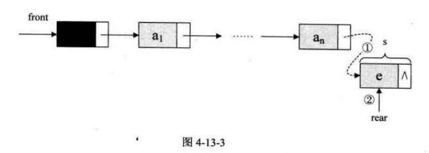
其代码如下:1
2
3
4
5
6
7
8
9
10
11
12/*插入元素e为Q的新的队尾元素*/
Status EnQueue(LinkQueue *Q ,QElemType e)
{
QueuePtr s=(QueuePtr)malloc(sizeof(QNode));
if(!s) //存储分配失败
exit(OVERFLOW);
s->data=e;
s->next=NULL;
Q->rear->next=s; //把拥有元素e新结点s赋值给元对位结点的后继,见上图①
Q->rear=s; //把当前的s设置为队尾结点,rear指向s,见上图②
return OK;
}
队列的链式存储结构—出队操作
出队操作就是头结点的后继结点出队,将头结点的后继改为他后面的结点,若链表出头绩点外只剩一个元素时即出队后称为空队列,则需要将rear指向头结点,如图4-13-4所示.
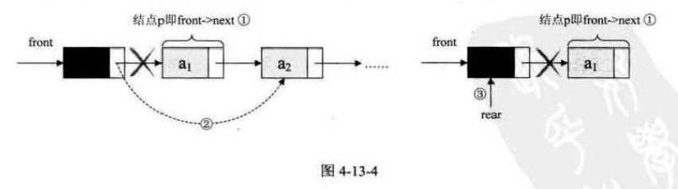
代码如下:1
2
3
4
5
6
7
8
9
10
11
12
13
14/*若队列不空,喊出Q的队头元素,用e返回其值,并返回OK,否则返回ERROR*/
Status DeQueue(LinkQueue *Q,QElemType *e)
{
QueuePtr p;
if (Q->front==Q->rear)
return ERROR;
p=Q->front->next; //将欲删除的队头结点暂存给p ①
*e=p->data; //将欲删除的队头结点的值赋值给e
Q->front->next=p->next; //将原队头结点后继p->next赋值给头结点后继 ②
if(Q->rear==p) //若队头是队尾,则删除后将rear指向头结点 ③
Q->rear=Q->front;
free(p);
return OK;
}
比较:
- 时间上,基本操作都是常数时间,即都为O(1)的,不过循环队列是实现申请好空间,连列队在每次的申请和释放结点也会消耗一点点时间,如果入队出队频繁,还是存在差异.
- 空间上,循环列队必须有一个固定的长度,一定程度上造成了空间的浪费你,而链队列尽管需要一个指针域产生一定的空间开销,但也可以接受.相较之下,连列队更加灵活.
总的来说,在可以确定队列长度UI大致的情况下,建议使用循环队列,繁殖,则用链队列
总结回顾
栈和队列都是特殊的线性表,只不过对插入和删除操作做了限制.
- 栈(stack)是限定仅在表位进行插入和删除操作的线性表,
- 队列(queue)是只允许在一段进行插入操作,而在另一端进行删除操作的线性表
对于栈来说,如果是两个相同数据类型的栈,则可以用数组的两端作栈底的方法来让两个栈共享数据,这样可以最大化的利用数组空间
对于队列来说,为了避免数组插入和删除时需要移动数据,于是就引入了循环队列,使得队头和队尾可以在数组中循环变化.解决了移动数据的时间损耗.
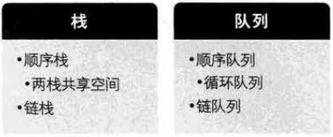

{kind=link}
{kind=link}